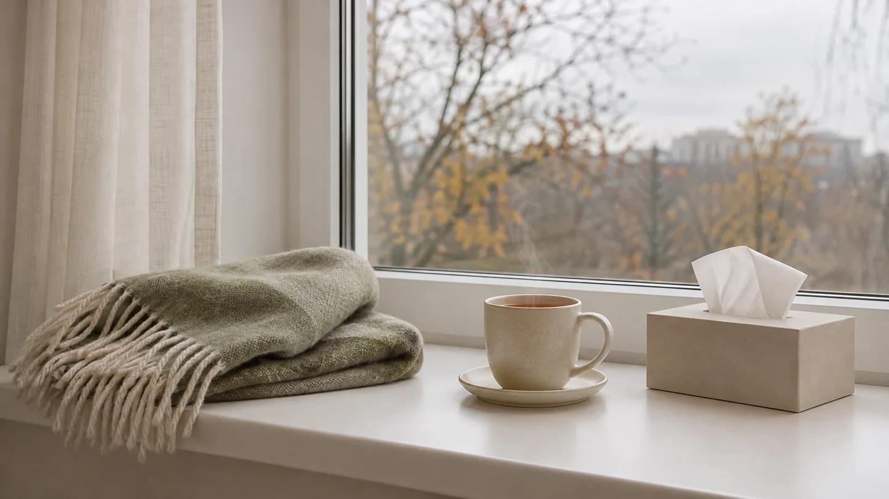

Простуда и ОРВИ
ОРВИ у взрослых: симптомы по дням, сколько длится и когда идти к врачу
Обычное ОРВИ у взрослого длится 5–10 дней. Температура держится 2–3 дня, насморк и боль в горле проходят примерно за неделю, кашель может остаться ещё на 2–3 недели. Сильнее всего человек заразен в первые 2–3 дня болезни. К врачу стоит идти, если температура выше 38 °C держится дольше трёх дней, после улучшения снова стало хуже или симптомы не проходят дольше 10 дней.
- Проверила
- Казина Екатерина Владимировна, врач-терапевт
- Дата проверки
- Чтение
- 11 минут
Что такое ОРВИ
ОРВИ, острая респираторная вирусная инфекция, это общее название простуд, которые вызывают вирусы. Таких вирусов больше двухсот: риновирусы, аденовирусы, сезонные коронавирусы, респираторно-синцитиальный вирус и другие. Иммунитет к одному из них не защищает от остальных, поэтому взрослый в среднем болеет ОРВИ два-три раза в год, чаще осенью и зимой.
Вирус передаётся по воздуху при кашле, чихании и разговоре, а также через руки и предметы: дверные ручки, телефон, поручни. Грипп и COVID-19 тоже острые респираторные инфекции, но протекают тяжелее и лечатся иначе. Как их отличить, разберём ниже.
Первые признаки ОРВИ

ОРВИ обычно начинается постепенно, в течение суток. Первые признаки легко принять за усталость:
- першение или сухость в горле
- заложенность носа, чихание, прозрачные выделения из носа
- лёгкий озноб и слабость, хочется лечь
- тяжесть в голове, ломота в мышцах
- иногда слезотечение и резь в глазах
В следующие 1–2 дня симптомы усиливаются: появляются насморк, боль в горле при глотании, кашель, чаще сухой в начале болезни, и температура, обычно до 38 °C. Набор симптомов зависит от вируса. Один больше поражает нос, другой горло, третий вызывает кашель, поэтому у двух людей в одной семье простуда может выглядеть по-разному.
Симптомы ОРВИ по дням
Так обычно проходит неосложнённое ОРВИ у взрослого. Сроки примерные: у кого-то болезнь идёт быстрее, у кого-то на день-два дольше.
| День | Что происходит | Что делать |
|---|---|---|
| 1–2 день | Першение в горле, заложенность носа, чихание, слабость. К концу первых суток может подняться температура. | Остаться дома, больше пить и спать. Сейчас вы особенно заразны. |
| 2–3 день | Пик болезни: температура до 38 °C, иногда выше, обильный насморк, боль в горле, сухой кашель, ломота. | Пить тёплое, проветривать комнату, промывать нос. Сбивать температуру, если она плохо переносится. |
| 4–5 день | Температура уходит, горло болит меньше, выделения из носа становятся гуще, кашель может стать влажным. | Если температура выше 38 °C не снижается, это повод показаться врачу. |
| 6–7 день | Силы возвращаются, остаются небольшой насморк и кашель. | Можно возвращаться к обычным делам, если нет температуры и самочувствие нормальное. |
| 8–10 день | Большинство симптомов прошло, может остаться покашливание. | Если стало хуже или симптомы не проходят, запишитесь к терапевту. |
| До 3 недель | Остаточный кашель: слизистая дыхательных путей восстанавливается дольше остальных симптомов. | Кашель дольше трёх недель нужно показать врачу. |
Тревожный признак, который часто пропускают: человеку стало лучше, а через день-два снова поднялась температура, усилились кашель или боль. Так часто начинаются осложнения, синусит или пневмония. В этом случае не ждите и запишитесь к врачу.
Сколько длится ОРВИ и сколько дней заразен человек
От заражения до первых симптомов, то есть инкубационный период ОРВИ, обычно проходит от 1 до 5 дней. У риновирусов он короче, 1–3 дня, у аденовирусов может быть дольше.
Сама болезнь у взрослого без осложнений длится 5–10 дней. Остаточный кашель и небольшая слабость могут держаться ещё 2–3 недели, это не значит, что вы всё ещё болеете.
Заразным человек становится примерно за сутки до первых симптомов. Больше всего вирусов он выделяет в первые 2–3 дня болезни, особенно пока держится температура. Обычно через 5–7 дней человек уже почти не заразен, хотя небольшое количество вируса может выделяться и дольше. Поэтому:
- в первые 3–5 дней болезни лучше остаться дома
- пока есть насморк и кашель, чаще мойте руки, кашляйте и чихайте в салфетку или локоть
- если приходится выходить из дома, наденьте маску
- по возможности не общайтесь близко с пожилыми родственниками, беременными и людьми с хроническими болезнями
Сколько держится температура при ОРВИ
При обычном ОРВИ температура держится 2–3 дня, реже до 5 дней, и чаще не поднимается выше 38 °C. При аденовирусной инфекции она может держаться дольше, до 5–7 дней. Повышенная температура это не враг: так организм борется с вирусом.
Сбивать температуру нужно не всегда. Обычно жаропонижающее принимают, если температура выше 38–38,5 °C или её тяжело переносить: сильная головная боль, ломота, не получается уснуть. Выбрать препарат и дозу поможет врач или фармацевт. Не принимайте сразу несколько средств от простуды: в них часто одно и то же жаропонижающее, и можно превысить дозу.
Покажитесь врачу, если температура выше 38 °C держится дольше трёх дней, не снижается после жаропонижающего или поднялась снова после нескольких дней нормальной температуры.
ОРВИ без температуры
У взрослых ОРВИ часто проходит без температуры или с температурой до 37,5 °C. Особенно часто так бывает при риновирусной инфекции, обычной «простуде с насморком». Симптомы при этом привычные: заложенный нос, насморк, першение в горле, чихание, лёгкая слабость.
Отсутствие температуры не значит, что болезнь лёгкая или что человек не заразен. В первые дни такой человек так же выделяет вирус и может заразить коллег и близких. И это не повод переносить болезнь на ногах: отдых в первые дни помогает выздороветь быстрее и снижает риск осложнений.
Если температуры нет, но держится слабость, ломит тело или болит голова, это тоже ОРВИ, а не обычная усталость. Если такое состояние не проходит дольше недели, стоит показаться терапевту.
Когда идти к врачу
Обычно ОРВИ проходит само. Но есть признаки, при которых нужна помощь врача: одни срочно, другие в ближайшие дни.
Срочно. Вызывайте скорую помощь по номеру 103 или 112, если стало трудно дышать или не хватает воздуха в покое, появилась боль в груди, спутанность сознания, судороги, синюшность губ, сыпь, которая не бледнеет при надавливании, неукротимая рвота или температура выше 39,5 °C не снижается после жаропонижающего.
Запишитесь к терапевту в ближайшие дни, если:
- температура выше 38 °C держится дольше трёх дней
- после улучшения снова поднялась температура или стало хуже
- кашель усиливается, появилась мокрота жёлтого или зелёного цвета, боль в груди при кашле
- болят ухо, зубы верхней челюсти или лицо под глазами, густые выделения из носа держатся дольше 10 дней
- симптомы не проходят дольше 10 дней или кашель держится дольше трёх недель
- у вас есть хронические болезни сердца, лёгких, почек, сахарный диабет, вам больше 65 лет или вы беременны: в этих случаях лучше показаться врачу в первые дни болезни
- простуды повторяются несколько раз за сезон
Осложнения ОРВИ
Вирус повреждает слизистую носа, горла и бронхов, и к нему может присоединиться бактериальная инфекция. Самые частые осложнения ОРВИ у взрослых:
- синусит: воспаление пазух носа, густые выделения дольше 10 дней, боль и тяжесть в лице, которые усиливаются при наклоне
- отит: боль в ухе, заложенность, снижение слуха
- бронхит: кашель усиливается вместо того, чтобы ослабевать, появляется мокрота
- пневмония: высокая температура держится или возвращается, одышка, боль в груди при дыхании, сильная слабость
- обострение хронических болезней: бронхиальной астмы, хронической обструктивной болезни лёгких, болезней сердца
Распознать осложнение по симптомам дома трудно. Врач слушает лёгкие, осматривает горло и уши, при необходимости назначает анализы или рентген. Вовремя замеченное осложнение лечится быстрее и проще.
Как лечить ОРВИ у взрослых
Против большинства вирусов ОРВИ нет лекарства, которое уничтожает сам вирус: организм справляется с ним сам за несколько дней. Лечение нужно, чтобы облегчить симптомы, помочь организму и не пропустить осложнения. Что действительно помогает:
- отдых и сон, особенно в первые 2–3 дня
- много тёплого питья: вода, чай, морс, бульон; при температуре организм теряет больше жидкости
- прохладный влажный воздух в комнате, регулярное проветривание
- промывание носа солевым раствором, он смывает слизь и вирусы
- тёплое питьё и полоскания при боли в горле
- жаропонижающее, если температура плохо переносится, по совету врача или фармацевта
Чего делать не стоит: принимать лекарства «на всякий случай» и по совету знакомых, сочетать несколько комбинированных средств от простуды, ходить в баню и на тренировки с температурой, долго пользоваться сосудосуживающими каплями для носа.
Не принимайте лекарства по совету знакомых и рекламе. У любых препаратов есть противопоказания. Если у вас хронические заболевания, беременность или вы постоянно принимаете лекарства, подбирайте лечение ОРВИ с врачом.
Нужны ли антибиотики при ОРВИ
Нет. Антибиотики действуют на бактерии, а ОРВИ вызывают вирусы. При неосложнённом ОРВИ антибиотики не ускоряют выздоровление и не предотвращают осложнения, но могут вызвать побочные эффекты: расстройство кишечника, аллергию. А ещё из-за лишних курсов бактерии привыкают к антибиотикам, и потом, когда лечение действительно понадобится, оно может не сработать.
Густые жёлтые или зелёные выделения из носа сами по себе не признак бактериальной инфекции: так часто выглядит обычный насморк на 3–5 день. Решение об антибиотике принимает врач, если видит признаки бактериального осложнения: синусита, отита, бронхита или пневмонии.
ОРВИ, грипп или ковид: как отличить
Грипп и COVID-19 тоже вирусные инфекции дыхательных путей, но протекают тяжелее обычного ОРВИ и чаще дают осложнения. Примерные отличия:
| ОРВИ | Грипп | COVID-19 | |
|---|---|---|---|
| Начало | Постепенное, за сутки | Резкое, за несколько часов | Постепенное или резкое |
| Инкубационный период | 1–5 дней | 1–4 дня, чаще 2 | 2–14 дней, чаще 3–5 |
| Температура | До 38 °C, 2–3 дня, бывает без неё | 38,5–40 °C, 3–5 дней | Разная, может держаться дольше |
| Насморк | Сильный, с первого дня | Слабый или появляется позже | Бывает |
| Ломота и слабость | Умеренные | Сильные, с первых часов | Сильные, слабость бывает долгой |
| Кашель | Умеренный | Сухой, мучительный | Сухой, может держаться долго |
| Потеря запаха и вкуса | Только при заложенном носе | Редко | Бывает и без заложенности носа |
Точно отличить одно от другого по симптомам нельзя: болезни во многом похожи. Если врач подозревает грипп или COVID-19, он назначит тест. При гриппе это важно: в первые 48 часов болезни врач может назначить противовирусный препарат с доказанной эффективностью, особенно людям из групп риска. Лучшая защита от тяжёлого гриппа это ежегодная прививка осенью.
Больничный при ОРВИ
Больничный, или листок нетрудоспособности, сейчас оформляется электронно. Его открывает врач на очном приёме или при вызове на дом. Один врач может открыть больничный на срок до 15 календарных дней, дальше продление решает врачебная комиссия.
При неосложнённом ОРВИ больничный обычно открывают на 5–7 дней. Перед выходом на работу нужно снова прийти к врачу: он оценит состояние и закроет больничный или продлит его, если выздоровление затянулось.
Оформить больничный может медицинская организация, у которой есть лицензия на экспертизу временной нетрудоспособности. Можно ли оформить больничный в клинике 8.0.8, уточните у администратора при записи.
Что проверяет врач
На приёме терапевт расспрашивает, как началась болезнь и как менялись симптомы по дням, осматривает горло и нос, слушает лёгкие, измеряет температуру, давление и уровень кислорода в крови.
Анализы при обычном ОРВИ нужны не всегда. Врач назначает их, если болезнь затянулась, температура держится или есть подозрение на осложнение: общий анализ крови, С-реактивный белок, тест на грипп или коронавирус. Если врач подозревает пневмонию или синусит, он направит на рентген или КТ.
Лечение ОРВИ в клинике 8.0.8
В клинике 8.0.8 у метро «Римская» можно прийти на разовый приём терапевта или пройти программу «Сезонное ОРВИ», когда врач ведёт вас от первого приёма до выздоровления.
- Приём врача-терапевта: 5 800 ₽, около часа. Осмотр, оценка состояния и план лечения.
- Программа «Сезонное ОРВИ»: 9 000 ₽. Первичный приём терапевта (осмотр, сбор жалоб и анамнеза, оценка состояния, план лечения), лабораторная диагностика по назначению врача, лечение и повторный приём, на котором врач проверяет, как идёт выздоровление.
Анализы и капельницы оплачиваются отдельно, для участников программы на них скидка 10%. Цены по прайсу клиники от 16.11.2026. Записаться можно ежедневно с 9:00 до 21:00 по телефону или через форму на сайте.
Вопросы и ответы
Сколько дней заразен человек при ОРВИ?
Человек заразен примерно с суток до первых симптомов, сильнее всего в первые 2–3 дня болезни, пока держится температура. Обычно через 5–7 дней он уже почти не заразен, но пока есть насморк и кашель, стоит носить маску и чаще мыть руки.
Сколько держится температура при ОРВИ?
Обычно 2–3 дня, реже до 5 дней. Если температура выше 38 °C держится дольше трёх дней или поднимается снова после улучшения, нужно показаться врачу: это может быть осложнение.
Может ли быть ОРВИ без температуры?
Да, у взрослых это частый вариант. Насморк, боль в горле и слабость без температуры тоже ОРВИ, и в первые дни человек заразен для окружающих.
Сколько дней длится ОРВИ у взрослых?
Без осложнений 5–10 дней. Самые сильные симптомы в первые 2–3 дня, к концу недели остаются небольшой насморк и кашель. Остаточный кашель может держаться до 2–3 недель.
Какой инкубационный период при ОРВИ?
Обычно от 1 до 5 дней от контакта с больным до первых симптомов. Заразным человек становится примерно за сутки до того, как почувствует себя плохо.
Нужны ли антибиотики при ОРВИ?
Нет, антибиотики на вирусы не действуют. Их назначает врач, только если находит бактериальное осложнение: синусит, отит, бронхит или пневмонию.
На сколько дней дают больничный при ОРВИ?
При неосложнённом ОРВИ обычно на 5–7 дней. Один врач может открыть больничный на срок до 15 дней, а закрывает его на повторном приёме, когда человек здоров.
Чем ОРВИ отличается от гриппа?
Грипп начинается резко: за несколько часов поднимается температура до 39–40 °C, появляются сильная ломота и слабость, а насморк слабый или появляется позже. ОРВИ обычно начинается постепенно, с насморка и боли в горле, и протекает легче. Точно отличить их поможет тест, который назначает врач.

Статью проверилаКазина Екатерина ВладимировнаВрач-терапевт18 ноября 2026
Запись на приём
Статья не заменяет приём врача. Если вопрос касается вас, запишитесь: врач выслушает, осмотрит и назначит только нужные обследования. Ежедневно с 9:00 до 21:00, у метро «Римская».
Источники
- Клинические рекомендации «Острые респираторные вирусные инфекции (ОРВИ) у взрослых», Минздрав России, ID 724
- Минздрав обновил клинические рекомендации по ОРВИ у взрослых (GxP News, 11.08.2025)
- Influenza (seasonal), Всемирная организация здравоохранения
- About Common Cold, Центры по контролю и профилактике заболеваний США (CDC)
- Федеральный закон от 21.11.2011 № 323-ФЗ «Об основах охраны здоровья граждан в Российской Федерации», статья 59
Опубликовано 18 ноября 2026
Имеются противопоказания. Необходима консультация специалиста.